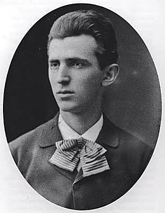
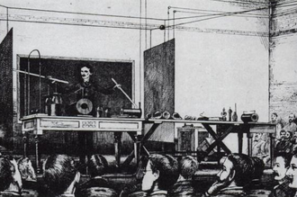

Nikola Tesla Born and raised in the Austrian Empire, Tesla studied engineering and physics in the 1870s without receiving a degree, gaining practical experience in the early 1880s working in telephony and at Continental Edison in the new electric power industry. In 1884 he emigrated to the United States, where he became a naturalized citizen. He worked for a short time at the Edison Machine Works in New York City before he struck out on his own. With the help of partners to finance and market his ideas, Tesla set up laboratories and companies in New York to develop a range of electrical and mechanical devices. His alternating current (AC) induction motor and related polyphase AC patents, licensed by Westinghouse Electric in 1888, earned him a considerable amount of money and became the cornerstone of the polyphase system which that company eventually marketed.

About
Born:-10 July 1856
Smiljan, Austrian Empire.
Projects:-Alternating currentHigh-voltage,high-frequency power experiments.
Died:-7 January 1943 (aged 86)
New York City, U.S.

Demonstration
Tesla demonstrating wireless lighting by "electrostatic induction" during an 1891 lecture at Columbia College via two long Geissler tubes (similar to neon tubes) in his hands.
Awards
Order of St. Sava, II Class, Government of Serbia (1892)
Elliott Cresson Medal (1894)
Order of Prince Danilo I (1895)
Edison Medal (1916)
Order of St. Sava, I Class, Government of Yugoslavia (1926)
HERE IS WHAT WE NEED TO KNOW ABOUT THE NIKOLA-TESLA
Tesla was working on patenting an arc lighting system, possibly the same one he had developed at Edison.
In March 1885, he met with patent attorney Lemuel W. Serrell, the same attorney used by Edison, to obtain help with submitting the patents.
Serrell introduced Tesla to two businessmen, Robert Lane and Benjamin Vail, who agreed to finance an arc lighting manufacturing and utility company in Tesla's name.
the Tesla Electric Light and Manufacturing Company.
Tesla worked for the rest of the year obtaining the patents that included an improved DC generator, the first patents issued to Tesla in the US, and building and installing the system in Rahway, New Jersey.
Tesla's new system gained notice in the technical press, which commented on its advanced features.
In late 1886, Tesla met Alfred S. Brown, a Western Union superintendent, and New York attorney Charles Fletcher Peck.
The two men were experienced in setting up companies and promoting inventions and patents for financial gain.
Based on Tesla's new ideas for electrical equipment, including a thermo-magnetic motor idea,they agreed to back the inventor financially and handle his patents.
Together they formed the Tesla Electric Company in April 1887, with an agreement that profits from generated patents would go 1⁄3 to Tesla, 1⁄3 to Peck and Brown, and 1⁄3 to fund development.
They set up a laboratory for Tesla at 89 Liberty Street in Manhattan, where he worked on improving and developing new types of electric motors, generators, and other devices.